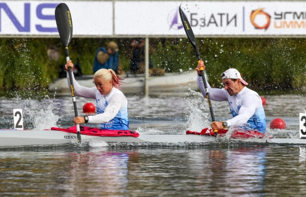
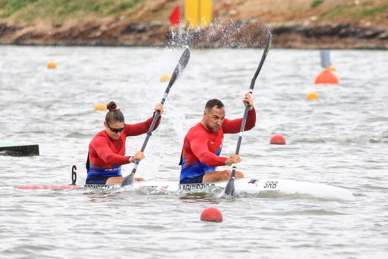
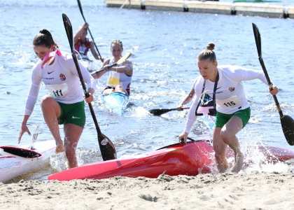
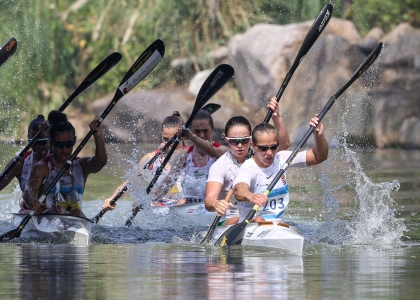
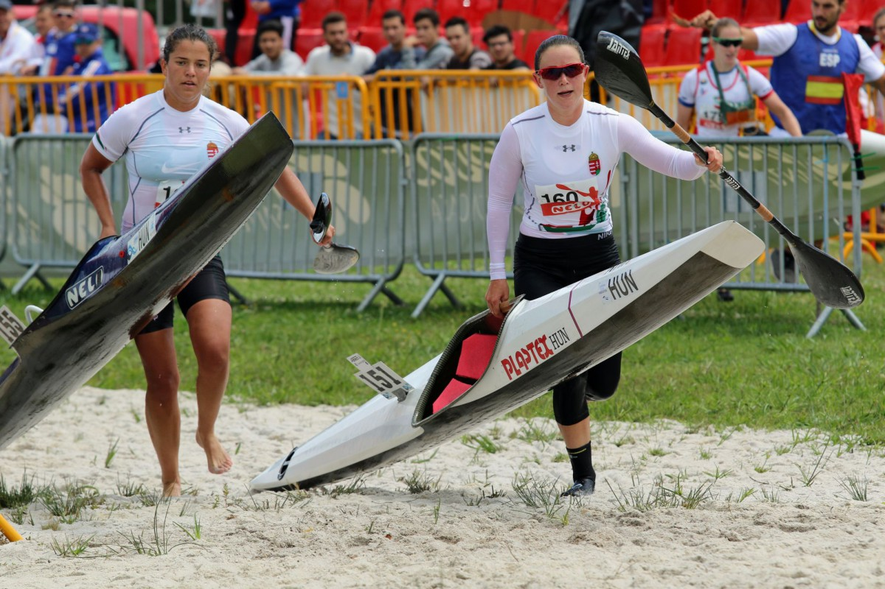

U neolimpijske discipline spadaju:
Neolimpijske discipline nisu ništa manje popularne od olimpijskih.
Kod muškaraca imamo:
Kod žena imamo:
Disciplina koja je postala popularna zadnjih godina je mix na 200m i 500m. Ova disciplnina ima lepu budućnost da se nadje na narednim olimpijskim igrama.
 Maraton se vesla na 20km i karakterističan je i za muškarce i žene. Trke u maratonu nisu toliko zanimljive za gledanje, jer dugo traju. Pored veslanja, takmičari imaju deo staze u kom trče sa čamcem. U svetu su Madjari dominantni u maratonu. Kod njih ima baš puno takmičara, pa oni često imaju izborne kontrole na kojima se odredjuje koji će takmičari veslati na maratonskoj trci. Takodje maratoni se veslaju i u dvosedima. Na ovakvim trkama ne postoje staze i pobedjuju takmičari sa najviše iskustva i izdržljivosti.
   nazad na vrh